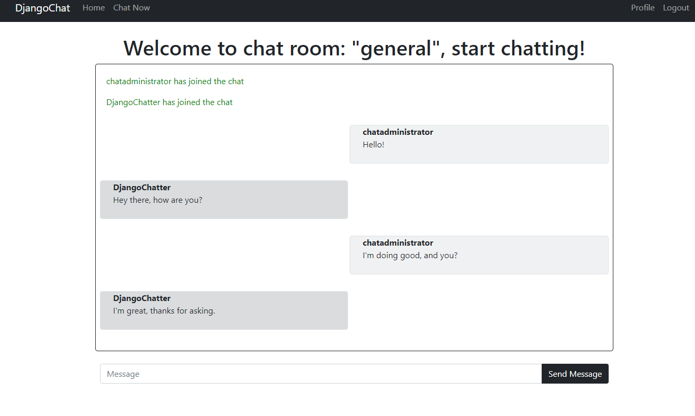
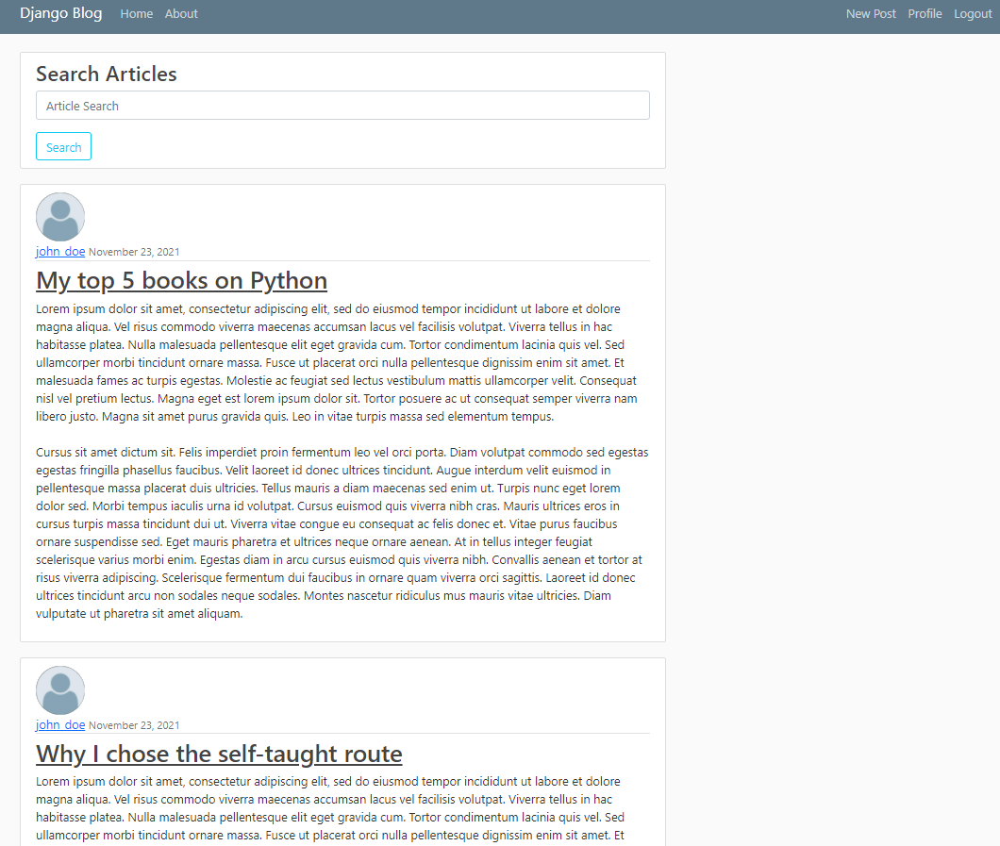
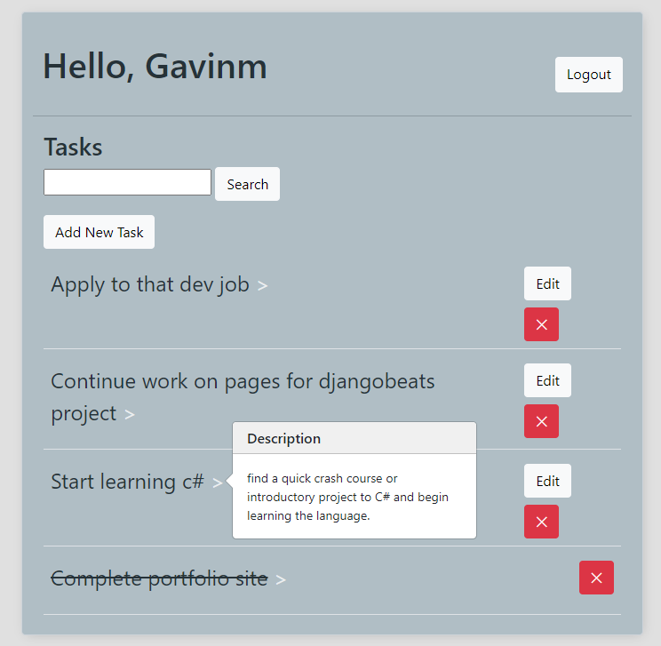
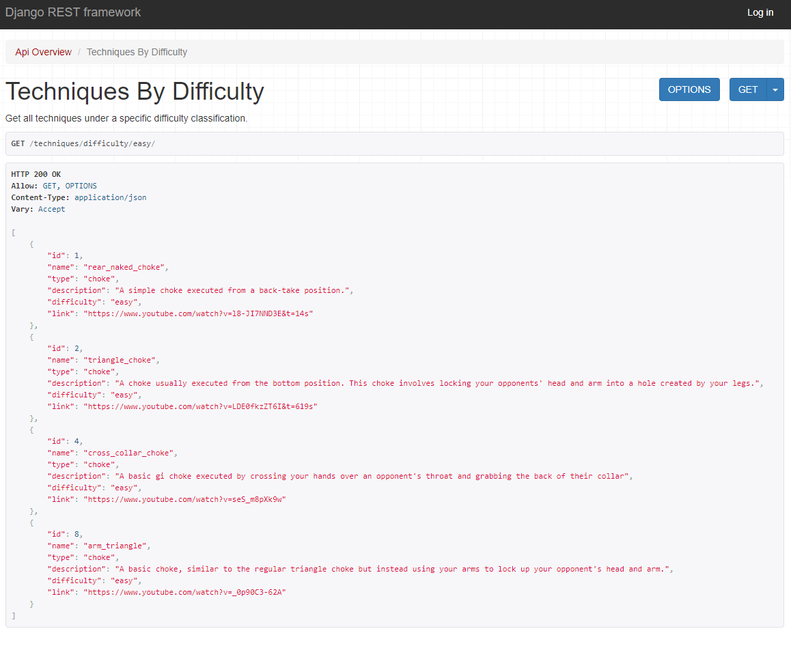
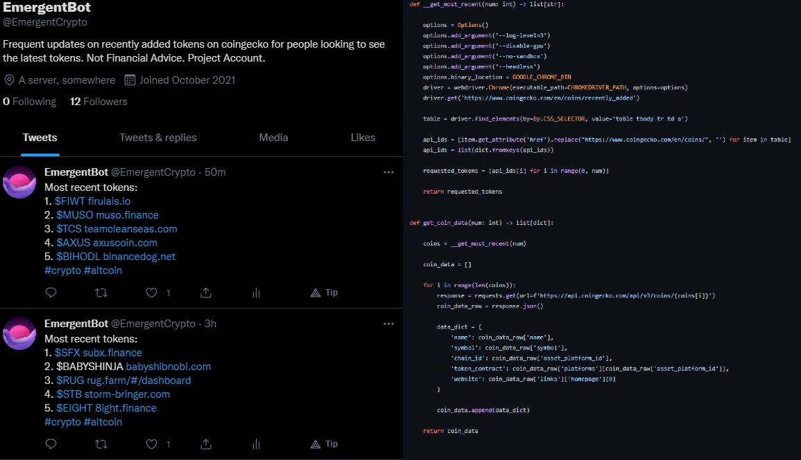

My name is Gavin Moran
I'm a self-taught developer with a passion for learning new technologies.
I primarily enjoy working on backend development and web applications.
Take a look at my most recent completed project. A chat application built with HTML, Bootstrap, Django, Javascript websockets, and Django Channels.


A fully functional blog application that allows users to engage with a variety of common blogging features. Features such as creating, reading, updating,
and deleting posts are present. Along with basic CRUD features, users can like and add comments to other users' posts. On the main page users are able to
search for articles if they are looking for specific posts. This applicaiton is built entirely on Django and was originally a tutorial project
that I modified and made additions to.

The classic to do application loved by aspiring developers everywhere. This project is built on HTML, Bootstrap, and Django. This project features
basic CRUD functionality and basic user authentication built entirely on Django's class-based views. It even has a task search
feature implemented as well for a little extra functionality.

Built with the Django Rest Framework, this simple API allows users to get information about different techniques found in Brazilian Jiu Jitsu.
This project also features user authentication to allow creating POST and DELETE requests. This project served as a great opportunity to
learn about REST API's and create one of my own.

A smaller project that I enjoyed making, this twitter bot uses Selenium for webscraping, the CoinGecko API for token data, and the Twitter API
through the tweepy library to interact with twitter and post about the latest crypto currencies on CoinGecko. It's even started gaining followers
all on it's own.